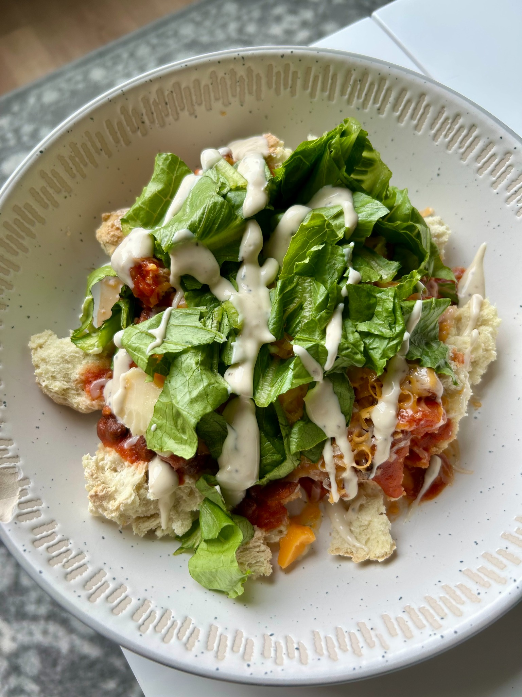
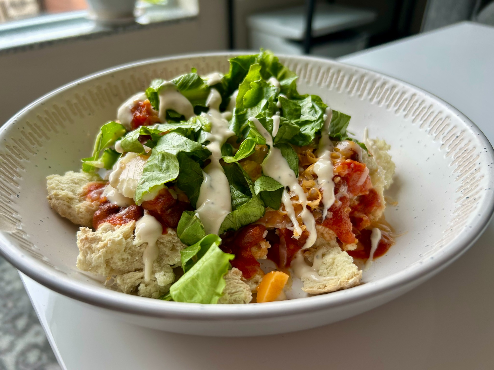
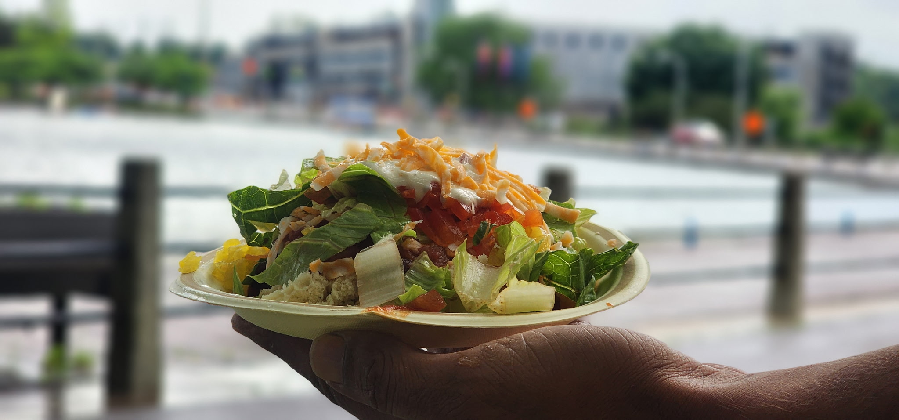
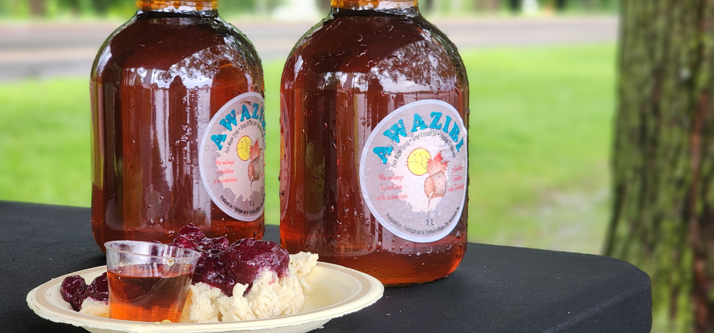
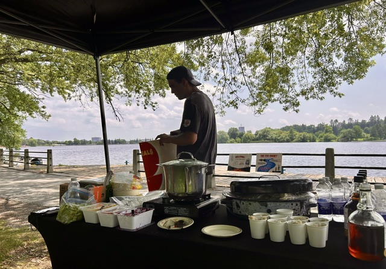
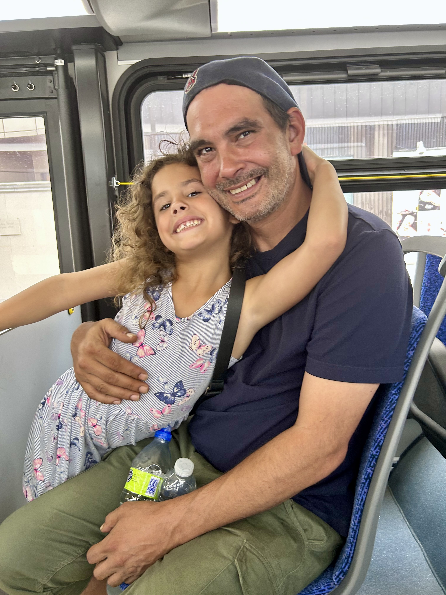
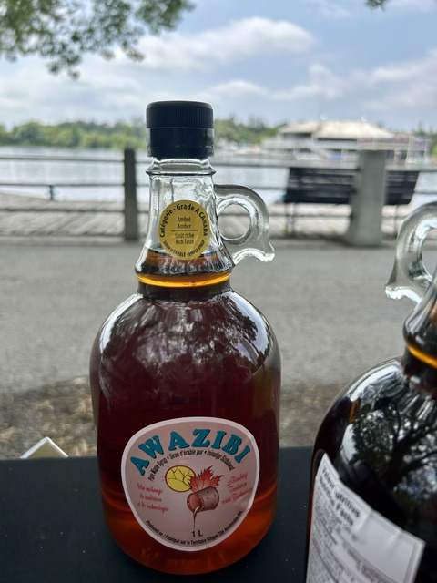

Restoring Algonquin Presence
We are building pathways for Algonquin entrepreneurs to bring their ideas into Ottawa with access to locations, infrastructure, sales support and a market ready to meet them.
See the Vision →Proud Algonquins from Kitigan Zibi
Chelsea's Kitchen is bringing Algonquin food, story and entrepreneurship into Ottawa — and building something designed to create opportunity long after the meal is over.
⌖ Rooted in Kitigan Zibi Anishinabeg · Building in Ottawa
What we're doing right now
Something is moving. Chelsea's Kitchen is growing beyond food into a bigger vision for Algonquin entrepreneurship, visibility and opportunity in Ottawa. Come be part of what happens next.
We are building pathways for Algonquin entrepreneurs to bring their ideas into Ottawa with access to locations, infrastructure, sales support and a market ready to meet them.
See the Vision →Our prize pool keeps growing as people and businesses step forward to support what we are building. Jump in, have some fun and help us keep the momentum going.
Enter the Raffle →Workplace lunches, events, campuses, community gatherings and partnerships. Chelsea's Kitchen is ready to keep showing up, meeting people and building relationships.
Work With Us →From one week to what comes next
TRC Week brought Chelsea's Kitchen into workplaces, campuses and organizations across Ottawa. People welcomed us in, shared the food and connected with the bigger idea. We are carrying that energy forward into Restoring Algonquin Presence.
This is about creating space for Algonquin entrepreneurs to show up in Ottawa with the infrastructure, locations, support and confidence to succeed.


Bring Chelsea's Kitchen to your table ♡Catering in Ottawa
Bring us in. Chelsea's Kitchen caters throughout Ottawa for team lunches, university events, conferences, community gatherings and private functions.
What we make
A focused menu with food people remember — from quick bites to full catered lunches.

SignatureFresh baked bannock, savoury filling, crisp toppings and our garlic sauce.
$5
SweetWarm bannock, berries and Awazibi maple syrup from Kitigan Zibi.
$5A hearty lunch-sized version made for workplace and catered service.
From $12Planning for a group? Ask about catering and quantity pricing.

Where this is going
Chelsea's Kitchen started in Kitigan Zibi and has grown through catering, pop-ups and community service in Ottawa. Our next step is to build a stronger permanent operation for 2027 — including a mobile food cart, more consistent service and opportunities for Algonquin people rebuilding their lives.
Every booking, contribution, introduction and new relationship helps us keep building something that can show up again and again in Ottawa.

Our Story
Chelsea's Kitchen is named after my daughter. It began in Kitigan Zibi with bannock and a simple desire to feed people. Over time, it became something larger: a way to build connection, represent where we come from with pride and create something sustainable for the future.
We call our signature item a Reconciliation Taco because reconciliation does not only happen in institutions. Sometimes it begins when people who may never have spoken end up sharing food.
We are proud Algonquins from Kitigan Zibi, building a sustainable presence in Ottawa.
Rooted in Kitigan Zibi
Our Maple Berry Bites feature maple syrup made in Kitigan Zibi. It is more than an ingredient. It is part of where we come from and one more way our food carries home with it.

Work With Us
Tell us about your workplace lunch, event, campus, community gathering, partnership idea or how you would like to be part of what we are building.